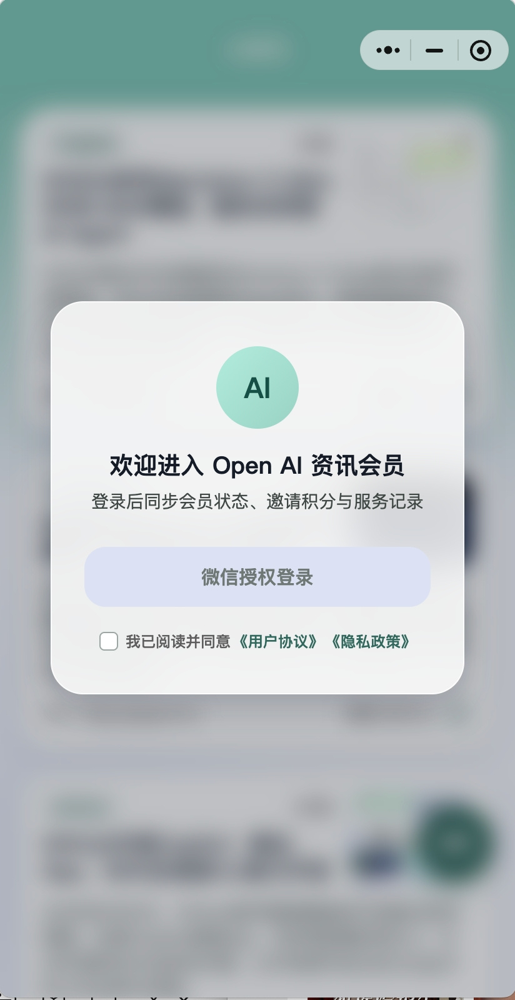
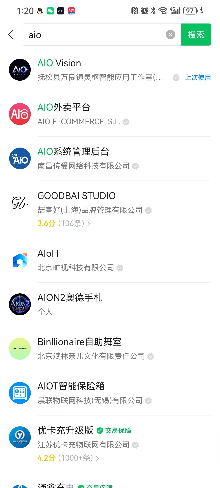
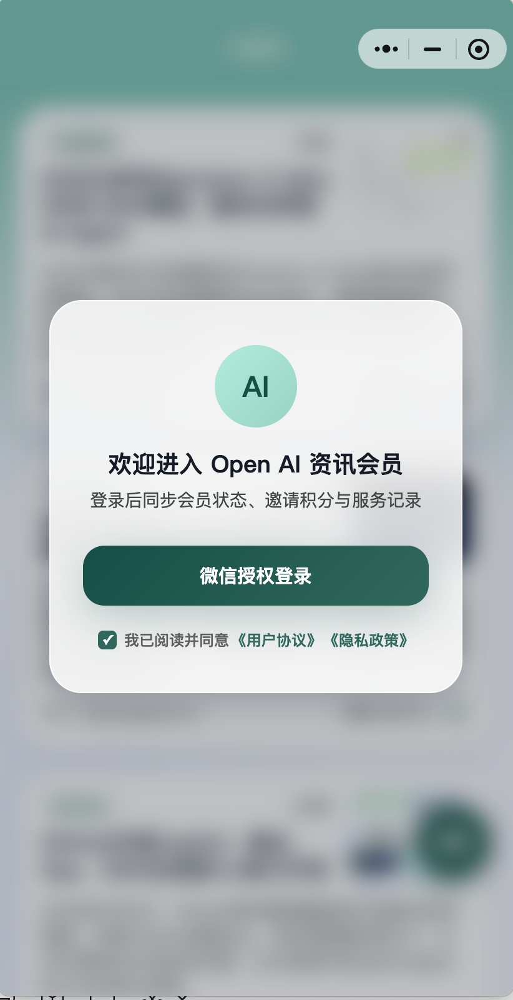
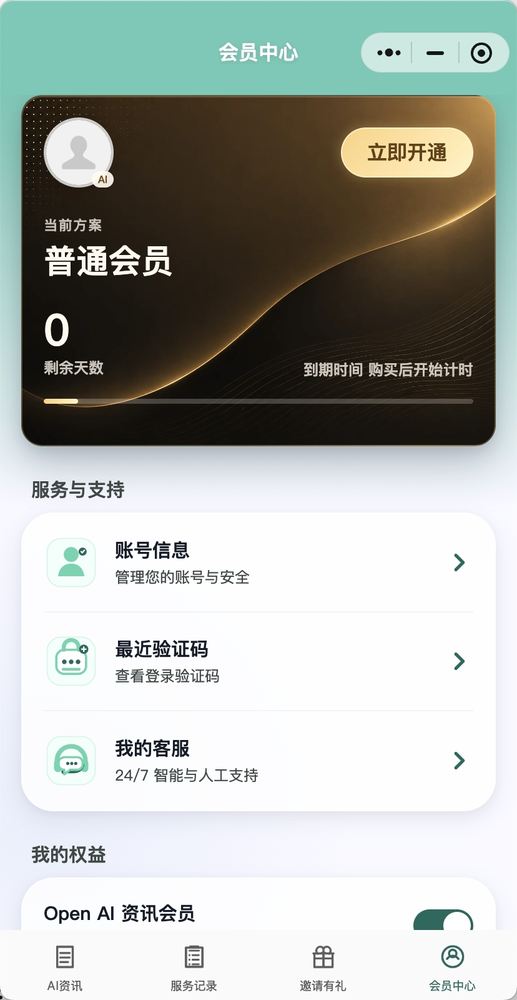
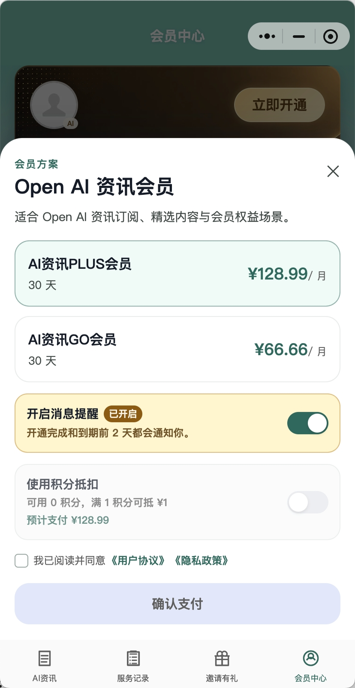
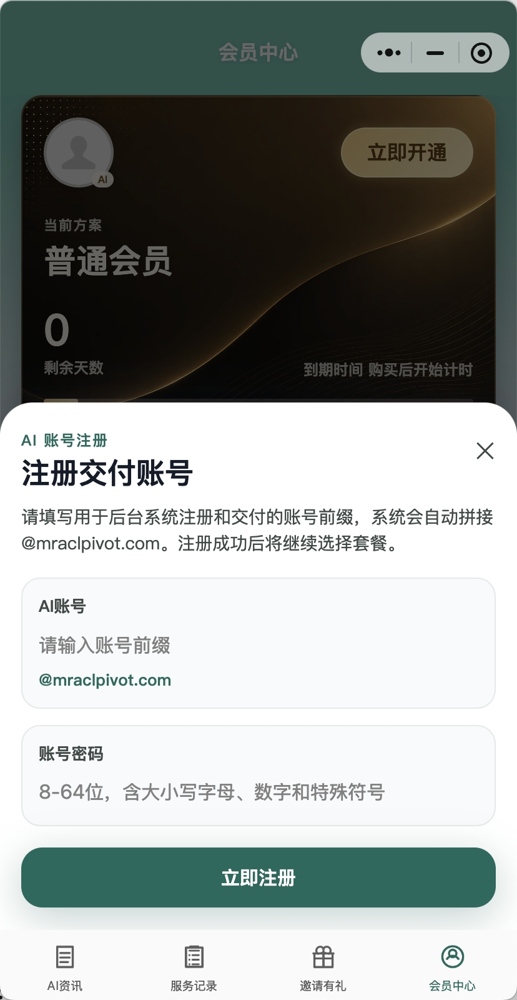
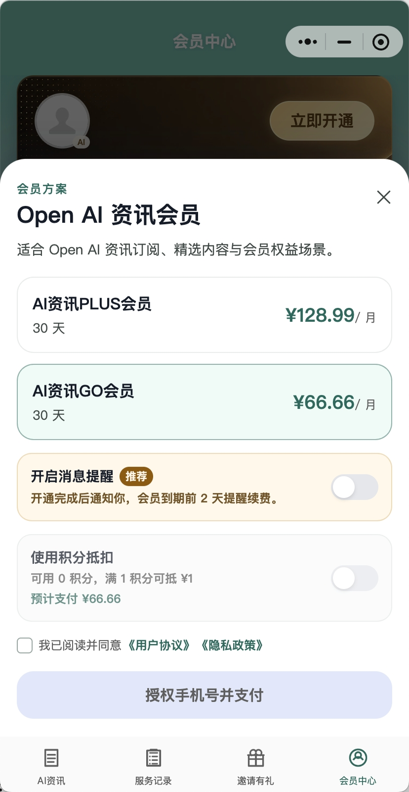
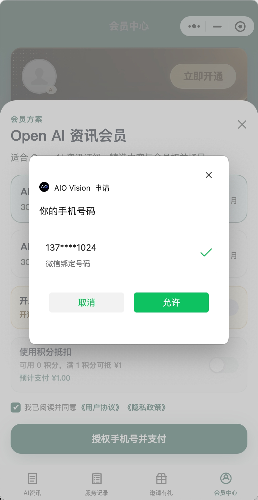
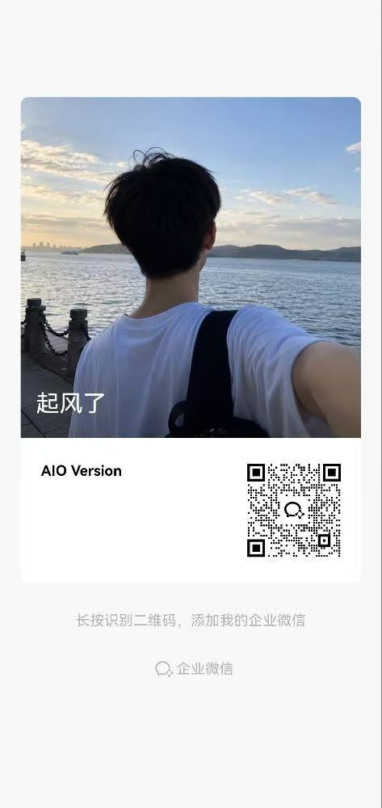

01
先登录，再进入会员中心
用户先完成微信授权登录，进入会员中心后再查看方案和订单状态，不做进门即拦截。
结合当前小程序的会员中心、账号注册、授权支付与服务记录，整理成一页式流程说明。适合首次开通、续费，或遇到验证问题时快速排查。

按当前项目的实际操作路径整理，尽量减少跳转和重复操作。
用户先完成微信授权登录，进入会员中心后再查看方案和订单状态，不做进门即拦截。
在方案弹窗里选择适合自己的套餐，确认协议后，按微信支付流程完成付款。
订单进入处理后，按要求补充账号信息。完成后可在服务记录中查看结果和后续状态。
这些图片来自同级目录，用于展示真实操作步骤，而不是抽象示意图。








把高频卡点提前列出来，减少反复沟通。
如果 ChatGPT 或相关服务要求手机号验证，优先使用你当前可控、可回收的合规号码。部分用户会评估第三方短信接收服务，例如 5sim.net，但是否能用、能否长期稳定，取决于地区法规、平台规则和账号风险。
订单量较大时，开通会有排队，这是正常情况。
支付后会进入一段开通过程。当订单堆积较多时，处理会有延迟，通常在 30 分钟到 2 个小时 之间。请先耐心等待服务记录更新。
如果超过预计时间仍未完成，可以添加工作人员企业微信咨询，确认当前订单状态和处理进度。
如果你对订单状态、手机号验证或支付后开通进度有疑问，可以直接联系工作人员企业微信。请优先说明订单时间、当前状态和遇到的问题，方便快速处理。
开通之后，重点是稳定登录、保存信息、降低后续风险。
把注册邮箱、账号前缀、密码、验证码接收方式统一保存，避免后续找不到入口。
如果页面反复打不开，先检查本地网络、DNS 和浏览器状态，同时确认设备具备可用的外网环境，再处理账号问题。
支付完成后，优先查看服务记录中的状态，不要频繁重复下单或刷新多个入口。
账号和密码只在必要场景下使用，避免在聊天记录里长期暴露完整凭证。